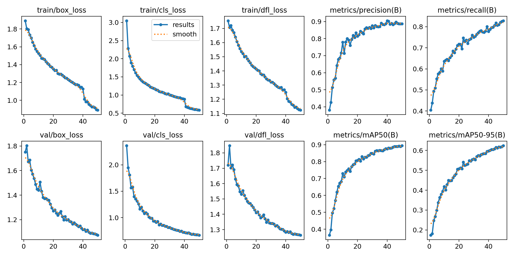

AI‑Powered Customs Inspection
A fine-tuned YOLOv8 object detection model for automatically identifying prohibited items in X-ray images. Achieved a high mAP50 score of over 0.90, demonstrating its effectiveness as a tool for customs and border security.
Workflow Highlights
- Leveraged transfer learning by fine‑tuning a pre‑trained YOLOv8 model on a specialized dataset.
- Applied advanced data augmentation techniques, including mosaic, to enhance model robustness and generalization.
- Monitored training progress via key metrics (mAP, Precision, Recall) to ensure effective learning over 50 epochs.
- Conducted rigorous evaluation using an unseen validation set to confirm real‑world performance.
Model Performance
Performance was tracked using standard object detection metrics, showing significant improvement from the initial state of the pre‑trained model.

The confusion matrix provided clear insight into the model's accuracy, confirming a high rate of correct predictions.

Visual comparison of ground-truth labels versus the model's predictions demonstrates the project's success.
Ground Truth

Model Prediction

Business Impact
- Enabled faster and more efficient customs inspection by automatically flagging high‑risk items.
- Allows officers to focus their expertise on complex cases, significantly reducing manual workload.
- Demonstrates a scalable solution that can be adapted for various security and inspection scenarios.